Hello
I'm Cider
钟月渟
Content creator · Chinese social media marketer
Based in Guangzhou
用文字、视频与视觉讲述故事。
横跨品牌叙事与空间美学。
Hello
Content creator · Chinese social media marketer
Based in Guangzhou
用文字、视频与视觉讲述故事。
横跨品牌叙事与空间美学。
Work
品牌短视频、活动宣传片、AI创意视频
Brand films · Event promos · AI-generated
视觉传达、拼贴艺术、议题海报
Visual communication · Collage · Issue-based
品牌文案、小红书爆文、短视频脚本
Brand copy · Rednote highlights · Scripts
书店文创陈列、空间叙事、场景策划
Retail display · Spatial storytelling
Journey
自由策划与剪辑，客户包含新的果汁、广州国际咖啡博览会、ECOFLEX。旅居清迈、云南，游历越南全境。
负责品牌话语体系建设，独立完成150+篇短视频脚本，管理视频号与抖音品牌矩阵，制定B端差异化内容策略，推动汉国置业在深圳与广州的项目落地。
负责「她设计奖」及「设计中国」的文案写作，包括推文、主持稿、宣传脚本、主题论坛。协助执行千人颁奖典礼，与获奖设计师及媒体对接协调。
负责书店文创区域的展台设计与陈列展示。
Introduction
Things I make when I'm not working


Work · Video Editing
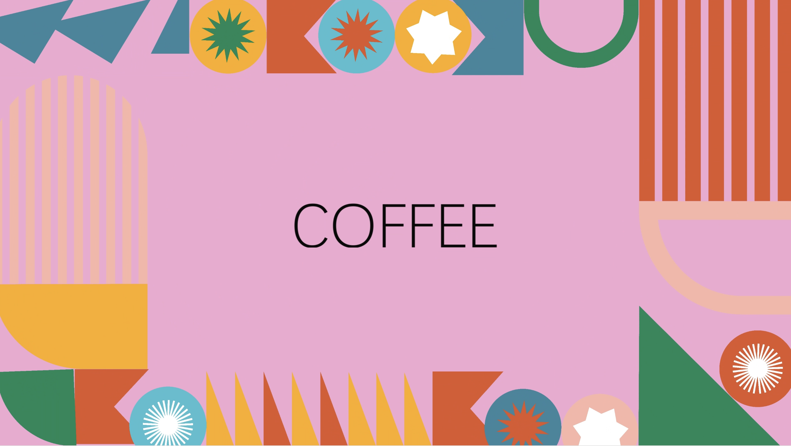
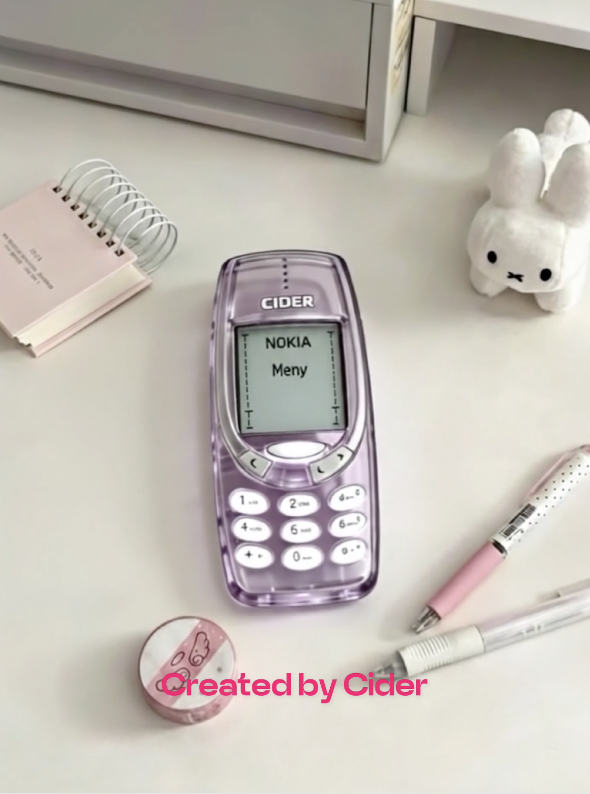
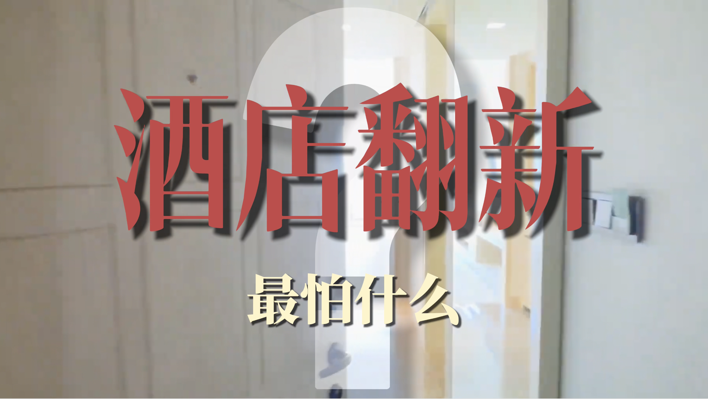
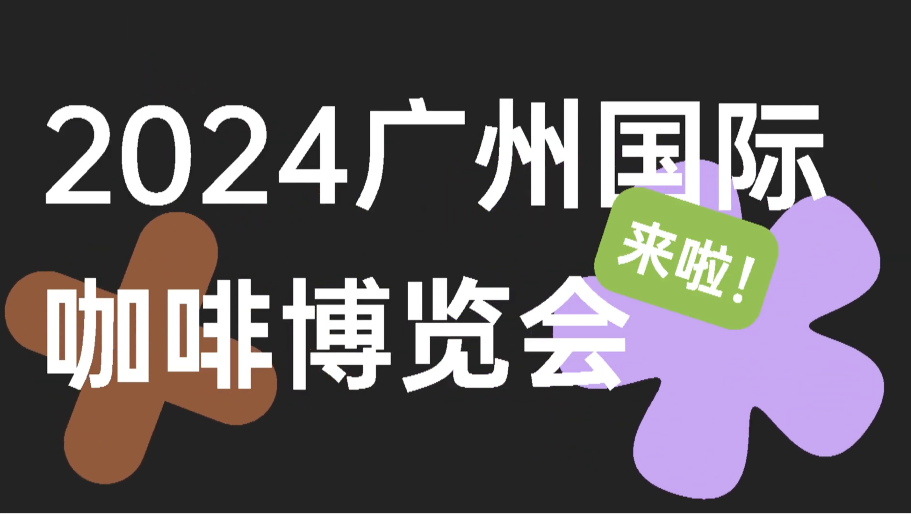
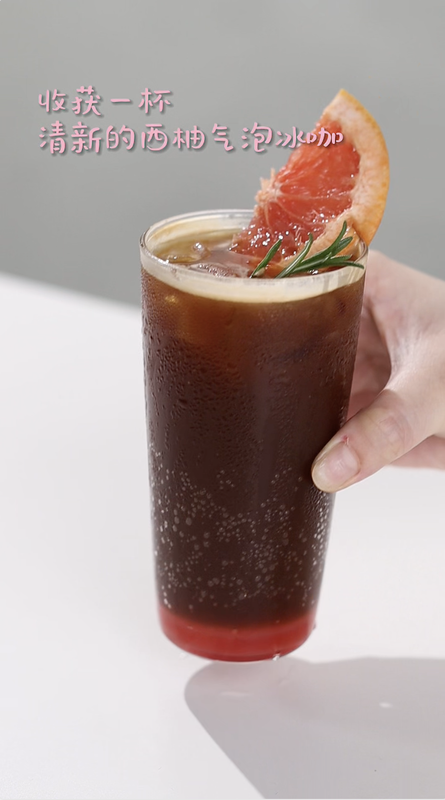
点击封面查看视频
Work · Poster Design
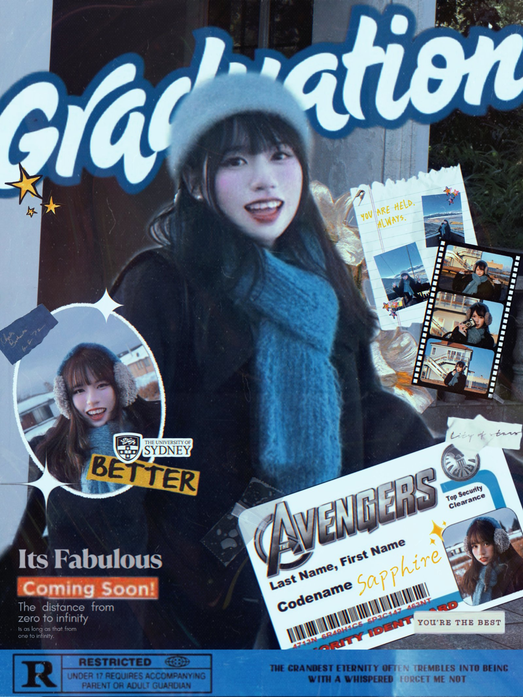
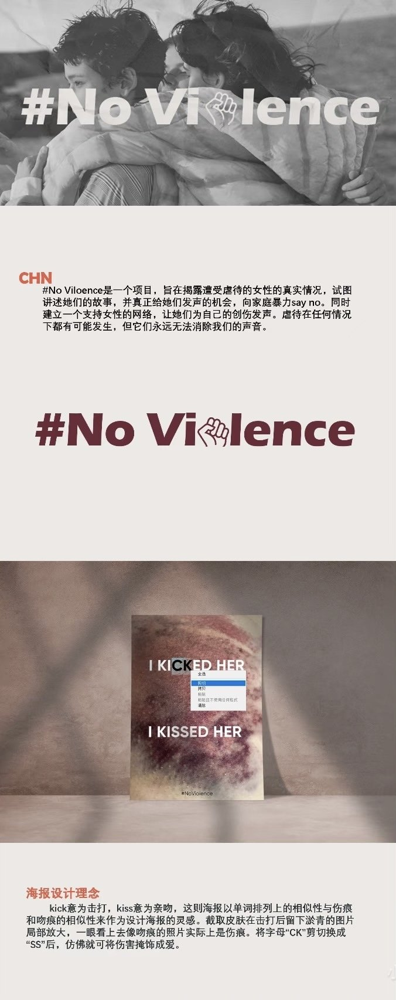
Work · Display
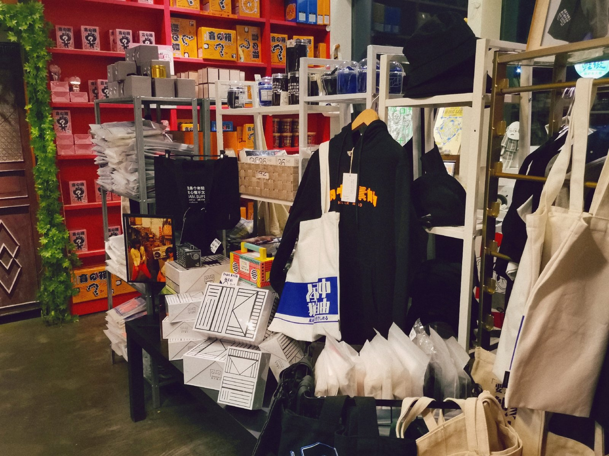
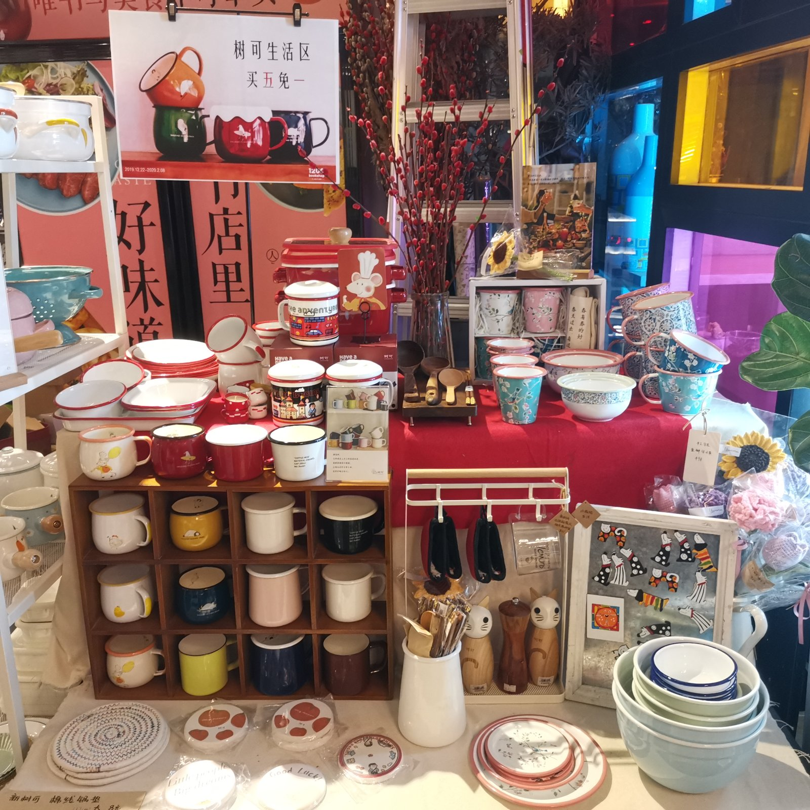
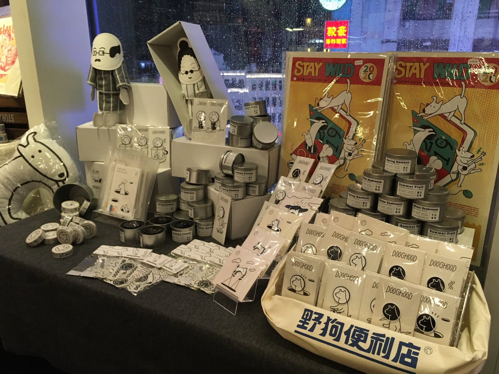
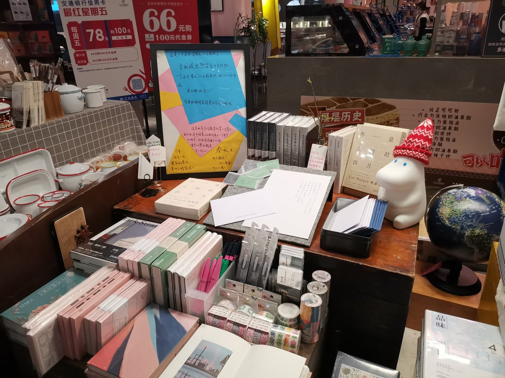
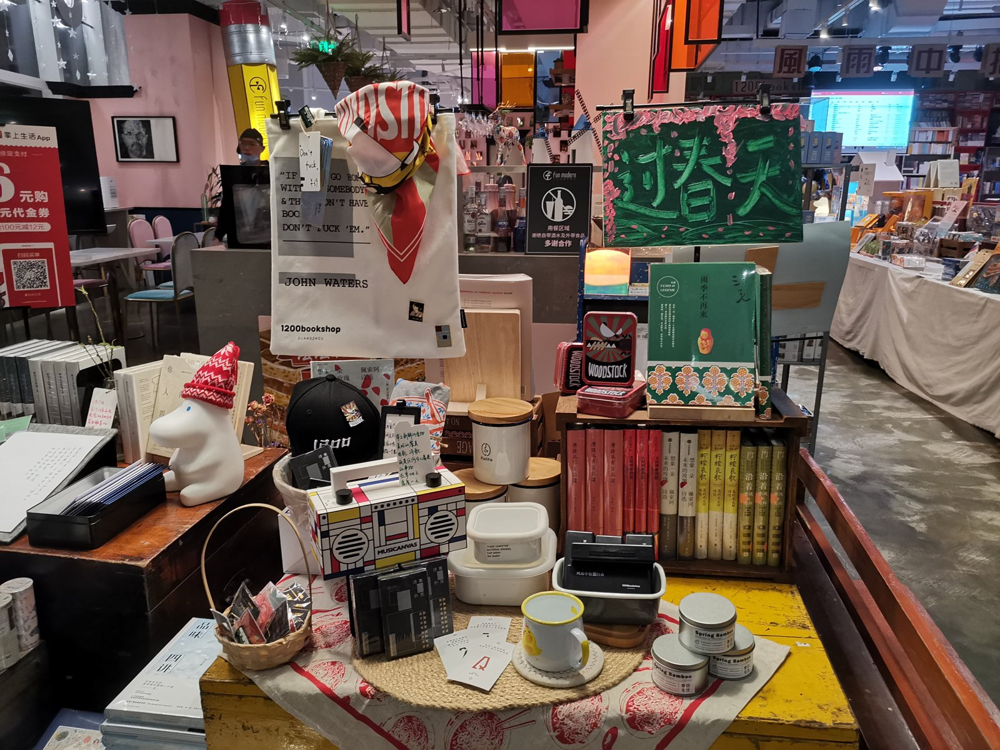


Work · Social Media Content
Social Media Content 社媒内容运营
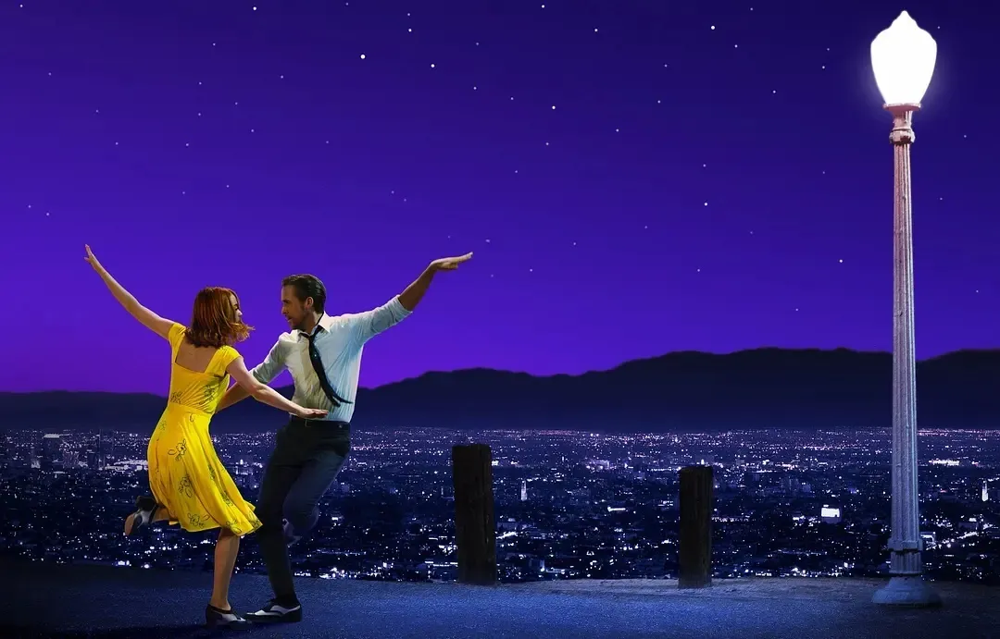
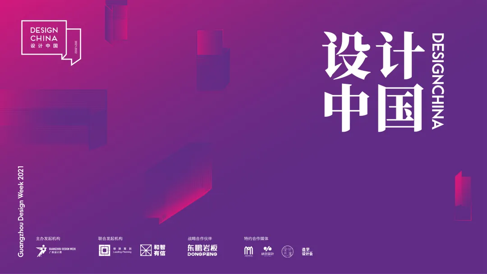
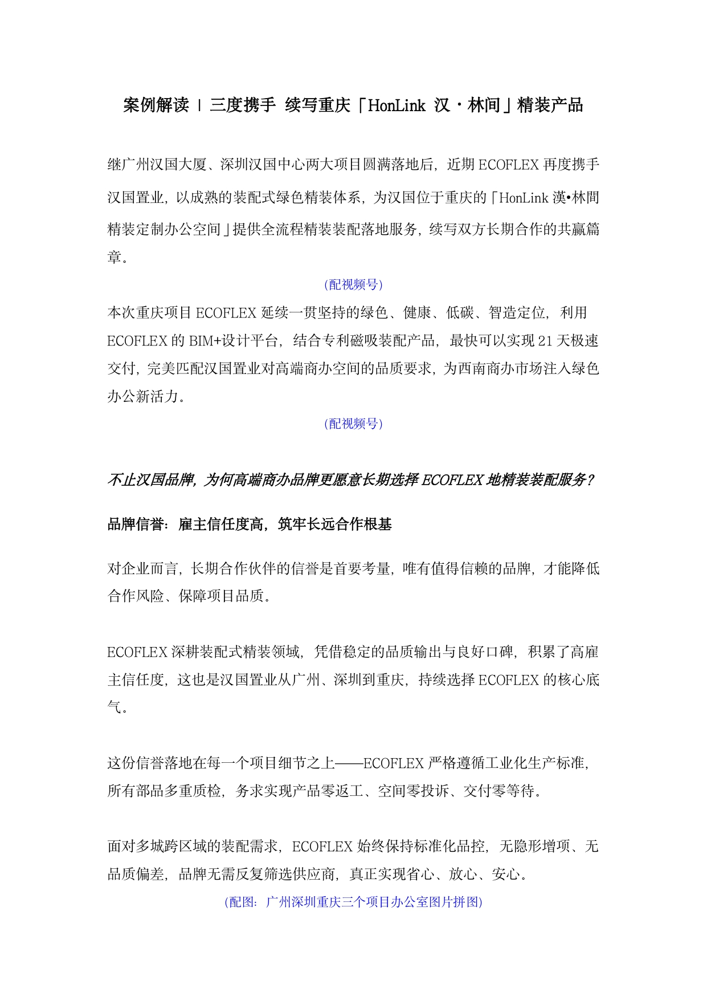
继广州汉国大厦、深圳汉国中心两大项目圆满落地后，近期 ECOFLEX 再度携手汉国置业，以成熟的装配式绿色精装体系，为汉国位于重庆的「HonLink 汉·林间精装定制办公空间」提供全流程精装装配落地服务，续写双方长期合作的共赢篇章。 本次重庆项目 ECOFLEX 延续一贯坚持的绿色、健康、低碳、智造定位，利用 BIM+设计平台，结合专利磁吸装配产品，最快可以实现21天极速交付，完美匹配汉国置业对高端商办空间的品质要求，为西南商办市场注入绿色办公新活力。 不止汉国品牌，为何高端商办品牌更愿意长期选择 ECOFLEX？ 品牌信誉：雇主信任度高，筑牢长远合作根基 ECOFLEX 深耕装配式精装领域，凭借稳定的品质输出与良好口碑，积累了高雇主信任度，这也是汉国置业从广州、深圳到重庆持续选择 ECOFLEX 的核心底气。所有部品多重质检，务求实现产品零返工、空间零投诉、交付零等待；面对多城跨区域需求，始终保持标准化品控，无隐形增项、无品质偏差。 服务到位：产品共创赋能企业核心竞争力 ECOFLEX 与企业共同完成产品共创，打造具备市场竞争力的差异化产品。装配产品支持反复拆装、随装随用，符合国际 WELL 和 LEED 健康建筑产品标准与国内绿色十环标准，为业主方实施 ESG 运营策略提供便利。 企业伴飞：全生命周期服务，共成长同发展 从项目前期对接全国化战略、搭建跨城交付体系，到交付后的定期巡检、及时维修，再到产品升级阶段结合技术迭代提供优化建议——ECOFLEX 以「企业伴飞」理念，随企业成长适配不同阶段需求。 从单次合作到持续绑定，这份伙伴关系是对 ECOFLEX 实力的认可，更是双方信任同行、协同共赢的最好见证。
"设计一座城，是设计的初端和划山画海的大开之笔，从此，文明与历史粉墨登场。" 「设计中国」作为中国室内设计领域首个空间实验策展活动，从2018年伊始，到现在已经走过了三年。 中国拥有世界上最富戏剧性的自然景观，高原、山林、湖泊、海岸线，丰富的地理跨度也使这片土地上的地域文化有着万千姿态。为了实现对未来城市生活空间的想象，广州设计周寻找城市设计力量团体——「设计中国」由此诞生。 2018 设计中国 · 诞生 由广州设计周正式推出，联合《现代装饰》杂志和领路营销策划共同发起，是中国室内设计领域首个空间设计实验策展活动。本届邀请了来自长沙、佛山、福州、南昌、上海、武汉、西安7个城市的设计师/设计公司，完成了2018设计中国的惊艳首秀。 2019 设计中国 · 接棒 沿袭上一年的策划运营，旨在树立未来城市设计品牌，搭建地域设计团体交流平台。本届邀请了来自重庆、佛山、福州、广州、嘉兴、南京、湛江7个城市的设计师/设计公司，书写属于他们的城市幻想。 2020 设计中国 · 破局 升级为中国城市设计团体实战赛，以城市为设计单位，展开策展设计并于现场呈现，由设计中国100大观察团现场体验评审并投票产生年度大奖。本届邀请了来自温州、常州、东莞、佛山、福建、广州、南宁7个城市的设计师/设计公司。 2021 设计中国 · 新生 启动全新规则，增设「设计中国最具人气奖」与「设计中国年度先锋榜」，参赛展位升级为可拆卸展位，打造可持续发展、环保展览；并迎来战略合作伙伴东鹏岩板，携手举办全国巡回论坛暨新品发布会。 2021年是设计中国第四年征途，披星戴月，栉风沐雨。12月9-12日，广州设计周约定你来见证最先锋的城市设计！
场景 1 · 黄金3秒 霍霍对着展厅工作人员说：你说这东西能颠覆传统装修？而且还比人工装修质量好5倍，速度快2倍？ 在工地上，霍霍拿着手机听语音，老板发来语音条：「中五路二号那个别墅，用这种新技术去做吧，我已经付了钱了，一百来万，全屋都装修完，你去对接一下。」（不讲明是装配式装修，下钩子） 场景 2 · 反转 霍霍一脸愤懑地把手机丢掉：「又100w打水漂，我去你个鬼啊」 镜头直接切到装配式展厅，霍霍东张西望、充满好奇——要跟前面的抗拒态度形成明显反差。 场景 3 · 找茬 霍霍拿着手机扫一圈，看不出是装配式还是普通装修：「你还说你是装配式装修公司，自己展厅都还用的传统工艺啊」 场景 4 · 反转 工作人员直接把一块墙面拉开，展示这其实都是装配式装修。 霍霍自拍尴尬表情（戴口罩）：「啊，行吧行吧（内心os）」 继续找茬：「这种简单的墙面有，我老板那边要求可不少，木饰面，岩板，艺术涂料，还有点墙布，这些你们能做咩？」 场景 5 · 反转 工作人员：「这是我们的一小部分材料样板，除了刚刚您说的这几种，像是不锈钢、玻璃、大理石、皮的，特殊工艺的面材我们都可以做，而且都是工厂做好，直接现场安装，速度快，质量好。」 自言自语：「嚯，还有点东西啊」 场景 6 · 反转 换一个密闭空间继续找茬：「你们这中间是龙骨结构，这个怎么隔音，一点隐私都没有」 房间外放歌，工作人员不停开关门——开门能听到外面声音，关门就听不到。 一脸懵：「额……算你赢」 结尾引导 「这种装配式装修速度非常快：龙骨生产3天、安装3天；面材生产20天、现场安装（含水电）30天；再留一个月给空调、电器、柜子、软装入场，基本3个月就能住进去。关键是工业化生产全是统一标准，质量有保障，不像普通装修全靠师傅人工，难以标准化。」 「朋友们，有这100w，你们是选择装配式装修，还是现在的普通装修呢？」